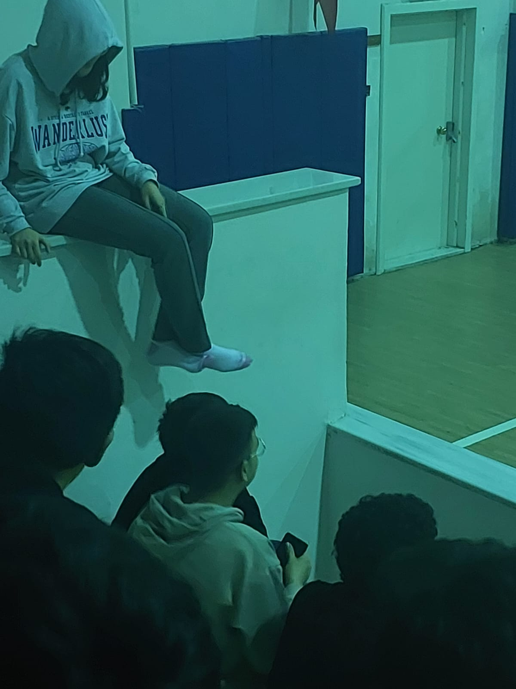
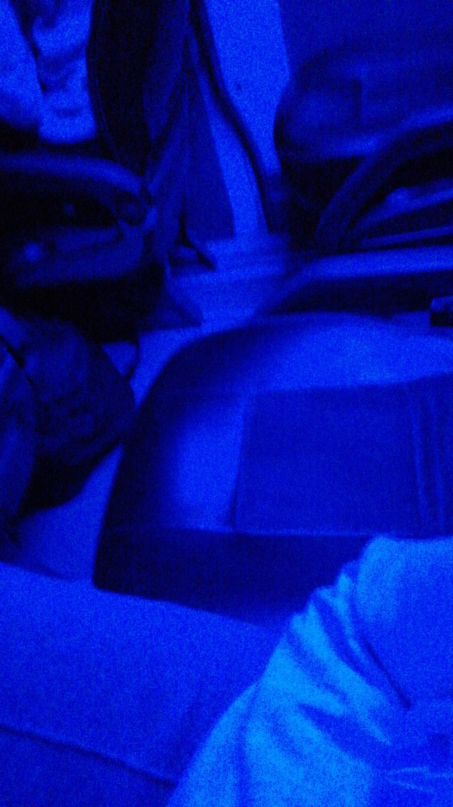
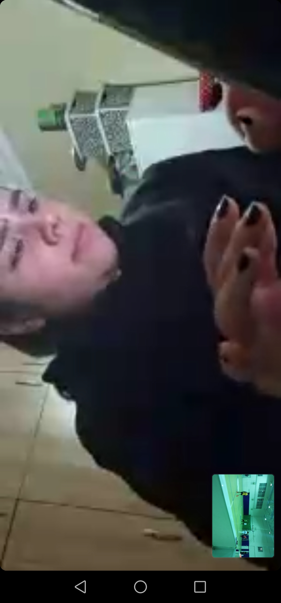
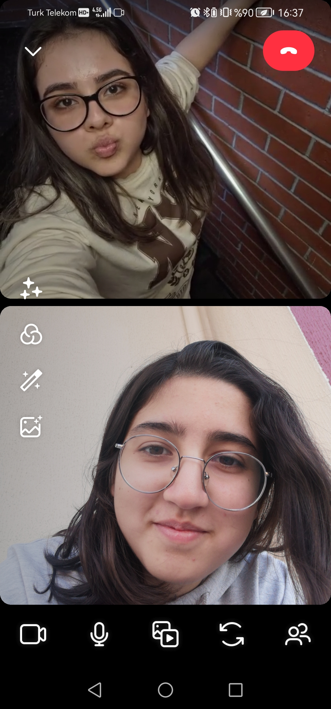
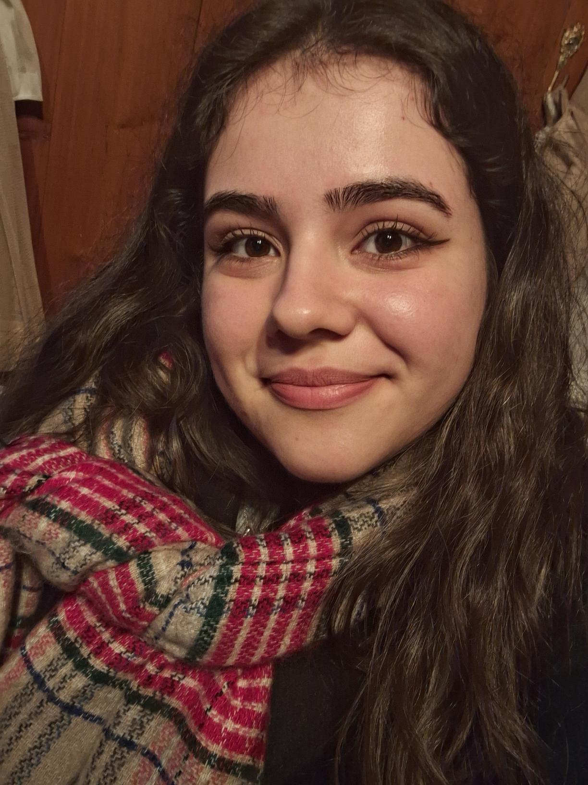
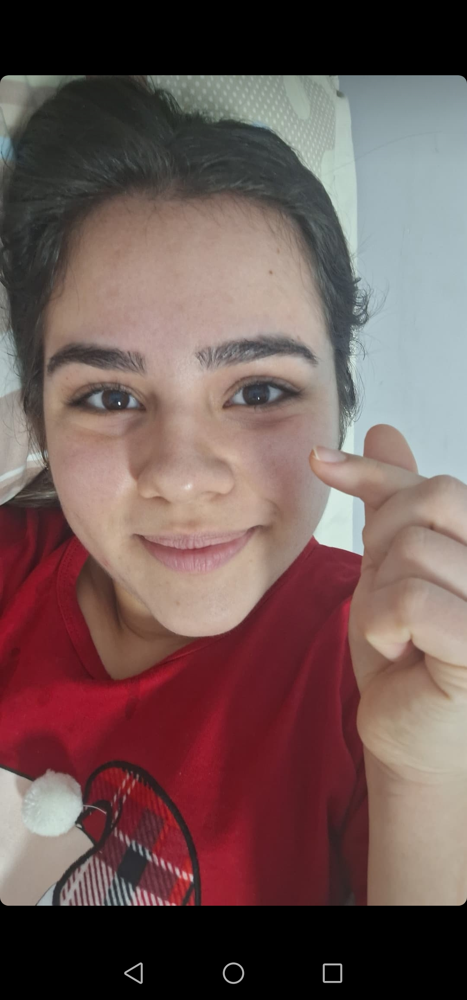
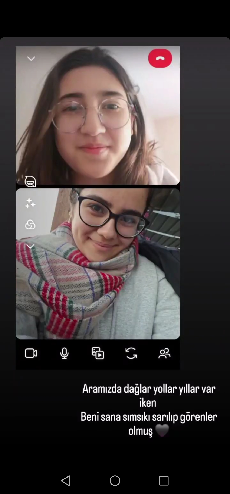
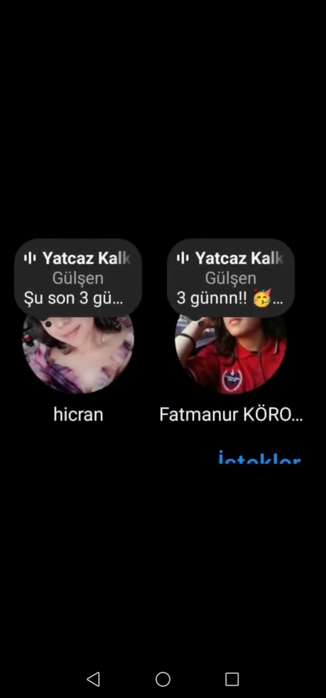
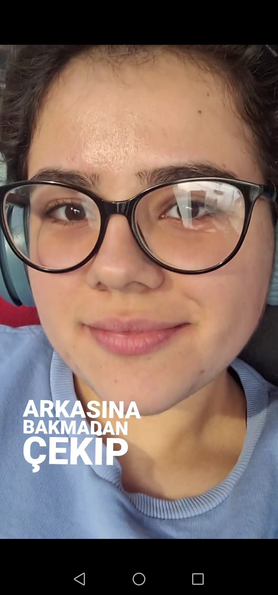

ÜNİ ZAMANI
Sen üniye gitmeden önce son aktivitemizdi bu konser.

Bunları yazdığım sırada gitmene 3 gün var. Ama biz yarın okula döneceğimiz için yarın son günümüz. Her zaman keşke 9'un nisan ayında olsak diyorum. O zaman bence çok güzeldi. Sürekli beraberdik. Olsundu be. Yine gidiyorsun, yine geliyorsun. Şimdi daha fazla yazıp senin için de gitmeyi zorlaştırmak istemiyorum.
İlk gittiğin zamanlar çok zorlanmıştım.
Nereye baksam bir anımız var okulda. Sabah beraber kahvaltı yaptığımız köşedeki masayı mı desem, omuzunda ağladığım bankı mı desem, sarıldığımız merdivenleri mi desem, odanızın penceresi mi desem,
Senin omzunda tekrar yatabilmeyi umduğum boş servis koltukları mı desem bilemedim.
Ama sen hiç beni yalnız bırakmadın:
Beraber maç bile izledik.

Hep ilgilendin benimle.
Arkadaşlarınla beraber olduğunda bile beni araman beni çok mutlu hissettiriyor.
 Gittiğin her yerden bana foto atman aljalkjlj
Aramadayken gizli gizli ss'lerimi alman (ben de yapıyorum lajlkaj)
Yılbaşı gecesinde de aynıydı
Sonra gelmene çok az kaldı(ikinci kezz 🥳)
Bu fotoyu Ceylin attı bu arada. Hatta şarkı koymuş, videoyu daha sonra gösteririm, buraya koyamıyorum.
Sonunda yola çıktın.
Artık heyecanlı bekleyişş
En sonunda memlekete varmış bulunmaktasın.
Bu sayfa birinci ve ikinci gidişinin biraz karması oldu. Ama 2.kez gelişinden bahsettim.
Silifke'de kısmına menüden ulaşabilirsiniz.